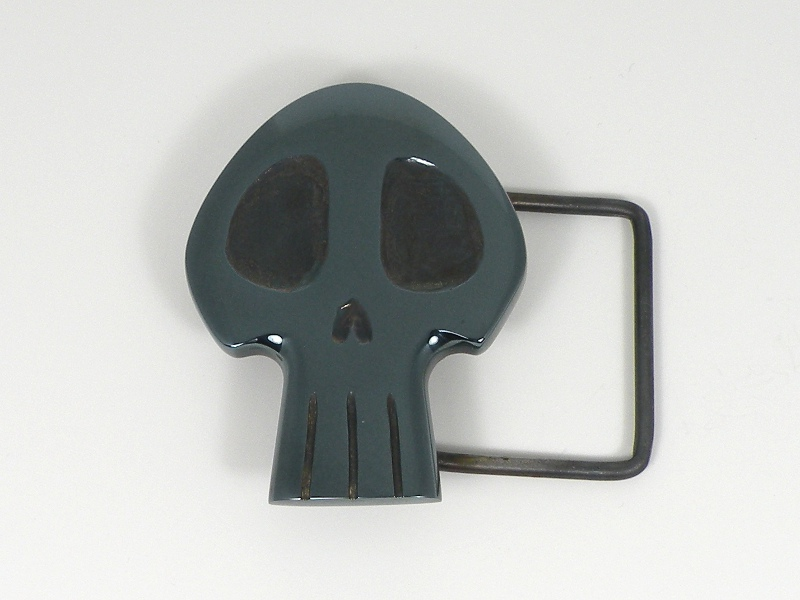

Skull Buckle Skull Buckle
Skull Buckle Skull BuckleSeveral years ago, I suffered an affinity for blued steel adonrments such as this hefty, blued steel belt buckle. It has endured many wearings and several years with no discernible damage to the bluing.
Carved from a solid piece of mild steel, this belt buckle took many hours to shape and polish. The belt loop and pin are both handmade from like steel, and brazed to the back of the skull. I was successful in using heat alone to grow a thick, blemish-free oxide layer on the steel, a passivating layer which has withstood wear and chemical attack well. The belt buckle I wear daily is blued in a like manner, so I can say with some certainty that sweat and constant rubbing will eventually wear through the oxide layer, much like a well-loved and oft-holstered handgun; however, such heat bluing is inferior to a chemically aided blueing in neither durability, nor beauty.
Created by Sean Corron, April 2, 2011.